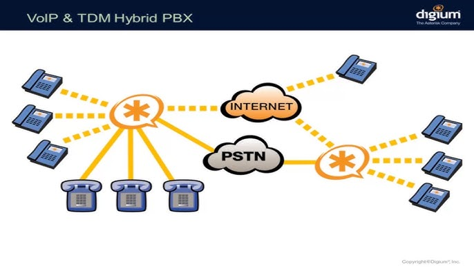

What Is Asterisk?
“Asterisk is an open source framework for building communications applications… Asterisk powers IP PBX systems, VoIP gateways, conference servers and other custom solutions.”
— Asterisk Project (Sangoma), from asterisk.org/get-started/
Asterisk is basically a toolkit that lets you create your own phone system with a normal computer. Instead of buying an expensive PBX or VoIP server, you can install Asterisk and build everything yourself. It is free, open source, and used by many companies in real environments. I like it because you can tweak almost every part of it. You can set up call routing, voicemail, conference rooms and many other features. It is supported by a large community along with Sangoma, which helps keep it stable and up to date.
To go a bit deeper, Asterisk is basically a full communications platform. It can handle VoIP calls, call menus, queues, voicemail, and group meetings. Companies like using it because it gives them the same features as commercial phone systems, but without huge costs. Since it is fully customizable, you can build very simple setups or very advanced ones depending on what you need.
What Is a Conference Bridge?

“A conference bridge allows a group of people to participate in a phone call… This is in contrast to three-way calling, a standard feature of most phone systems which only allows a total of three participants.”
— Asterisk Project (Sangoma), from asterisk.org/get-started/applications/conference/
A conference bridge is basically a virtual meeting room that people can call into. Instead of being limited to three people on a normal phone call, a conference bridge can handle dozens of participants at once. This is super useful for team meetings, online classes, or support calls. A lot of commercial phone systems make you pay extra for this feature, but with open-source tools like Asterisk, you can just host one yourself without spending a fortune. It's pretty cool to set up because you really see how call routing and telephony work behind the scenes.
Conference systems are used when multiple people need to join the same conversation, such as during online classes, work meetings, community events, or support calls. They make it easy for everyone to communicate in the same audio space rather than doing several separate calls.
In Asterisk, the system that powers these group calls is called ConfBridge. It is important because audio conferencing is one of the main features of a PBX. ConfBridge replaced an older module called MeetMe, which had limitations and needed extra hardware. ConfBridge is much more flexible because it uses separate concepts like bridges, users, and profiles. This lets you create different types of conference rooms, such as open discussion rooms, moderator controlled rooms, or lecture style rooms.
This modular design gives you a lot of control. You can set different permissions, audio options, and behavior settings for different users or rooms. That is why ConfBridge is the preferred solution for modern Asterisk setups.
Goals of the project
- Configure PJSIP users
- Build an audio conference room
- Demonstrate moderator/admin controls
- Provide documentation and testing results